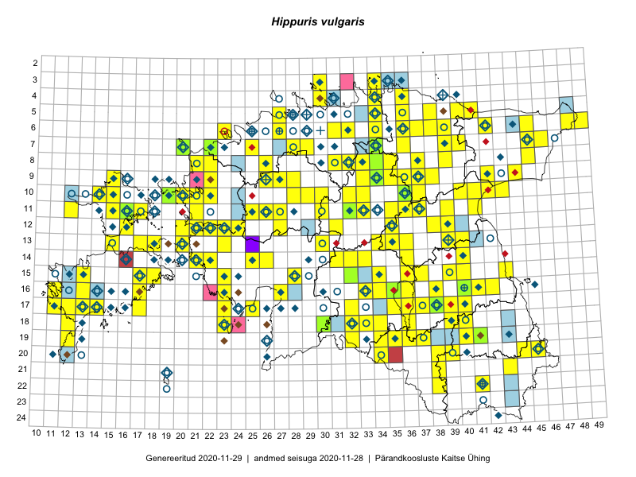

Hippuris vulgaris
Uuendatud: 2016-12-07
Kaardile koondatud taksonid: Hippuris vulgaris L.

Kaart põhineb 120 kirjel, neist vaatlusi 117 ja eksemplare 3. Taksonit on leitud 96 ruudust.
| Ruut | Vaatleja(d) | Vaatlusaeg | Kirje tüüp | Viide andmebaasikirjele |
|---|---|---|---|---|
| 13-15 | Toomas Kukk, Eerik Leibak | 2015-08-10 | ruut/ala | vaata PlutoFis |
| 03-30 | Ott Luuk, Peedu Saar | 2015-09-03 | ruut/ala | vaata PlutoFis |
| 11-35 | Ott Luuk, Peedu Saar | 2015-07-27 | ruut/ala | vaata PlutoFis |
| 09-37 | Toomas Kukk, Raivo Kalle | 2015-05-11 | ruut/ala | vaata PlutoFis |
| 13-20 | Peedu Saar, Elle Roosaluste | 2015-07-12 | ruut/ala | vaata PlutoFis |
| 14-36 | Peedu Saar | 2015-08-04 | ruut/ala | vaata PlutoFis |
| 04-36 | Rein Kalamees, Kersti Püssa | 2015-09-02 | ruut/ala | vaata PlutoFis |
| 10-29 | Tiit Hallikma, Toomas Kukk | 2015-06-11 | ruut/ala | vaata PlutoFis |
| 06-34 | Rein Kalamees, Kersti Püssa | 2015-09-11 | ruut/ala | vaata PlutoFis |
| 20-34 | Tõnu Feldmann, Katrit Karus | 2015-07-30 | ruut/ala | vaata PlutoFis |
| 11-41 | Peedu Saar | 2015-08-22 | ruut/ala | vaata PlutoFis |
| 16-33 | Tõnu Feldmann, Katrit Karus | 2015-07-31 | ruut/ala | vaata PlutoFis |
| 16-33 | Katrit Karus, Tõnu Feldmann | 2015-07-30 | ruut/ala | vaata PlutoFis |
| 09-44 | Ott Luuk, Hannes Pehlak | 2015-07-24 | ruut/ala | vaata PlutoFis |
| 04-30 | Peedu Saar, Ott Luuk | 2015-09-03 | ruut/ala | vaata PlutoFis |
| 14-32 | Katrit Karus, Tõnu Feldmann | 2015-08-03 | ruut/ala | vaata PlutoFis |
| 13-35 | Katrit Karus, Tõnu Feldmann | 2015-08-03 | ruut/ala | vaata PlutoFis |
| 13-35 | Katrit Karus, Tõnu Feldmann | 2015-08-05 | ruut/ala | vaata PlutoFis |
| 13-34 | Katrit Karus, Tõnu Feldmann | 2015-08-05 | ruut/ala | vaata PlutoFis |
| 13-34 | Katrit Karus, Tõnu Feldmann | 2015-08-05 | ruut/ala | vaata PlutoFis |
| 07-36 | Katrit Karus, Tõnu Feldmann | 2015-08-07 | ruut/ala | vaata PlutoFis |
| 07-36 | Katrit Karus, Tõnu Feldmann | 2015-08-07 | ruut/ala | vaata PlutoFis |
| 06-32 | Katrit Karus, Tõnu Feldmann | 2015-08-04 | ruut/ala | vaata PlutoFis |
| 06-32 | Katrit Karus, Tõnu Feldmann | 2015-08-04 | ruut/ala | vaata PlutoFis |
| 17-38 | Thea Kull, Peedu Saar | 2015-06-17 | ruut/ala | vaata PlutoFis |
| 20-45 | Toomas Kukk, Timo Luhamäe, Kersti Tambets, Sten Mander, Janika Sammasto | 2014-07-30 | ruut/ala | vaata PlutoFis |
| 16-38 | Thea Kull, Eerik Leibak | 2015-07-03 | ruut/ala | vaata PlutoFis |
| 06-45 | Thea Kull, Eerik Leibak | 2015-07-20 | ruut/ala | vaata PlutoFis |
| 15-23 | Indrek Tammekänd, Irja Tammekänd | 2015-08-02 | ruut/ala | vaata PlutoFis |
| 07-34 | Jana-Maria Habicht, Ester Valdvee | 2015-07-20 | ruut/ala | vaata PlutoFis |
| 15-23 | Indrek Tammekänd | 2015-04-06 | ruut/ala | vaata PlutoFis |
| 07-29 | Toomas Kukk, Thea Kull | 2014-08-20 | ruut/ala | vaata PlutoFis |
| 08-34 | Jana-Maria Habicht, Ester Valdvee | 2015-06-28 | ruut/ala | vaata PlutoFis |
| 09-34 | Jana-Maria Habicht, Ester Valdvee, Kirke Pilvik | 2015-07-25 | ruut/ala | vaata PlutoFis |
| 15-40 | Thea Kull | 2015-06-15 | ruut/ala | vaata PlutoFis |
| 15-37 | Eeva-Maria Jeletsky, Tarmo Niitla | 2015-05-05 | ruut/ala | vaata PlutoFis |
| 05-41 | Meeli Mesipuu, Timo Luhamäe | 2015-07-24 | ruut/ala | vaata PlutoFis |
| 10-29 | Ott Luuk, Toivo Sepp | 2015-08-21 | ruut/ala | vaata PlutoFis |
| 10-32 | Ott Luuk | 2015-08-03 | ruut/ala | vaata PlutoFis |
| 11-36 | Ülle Jõgar, Illi Tarmu, Kai Rünk | 2015-07-24 | ruut/ala | vaata PlutoFis |
| 19-37 | Eeva-Maria Jeletsky, Tarmo Niitla | 2015-08-10 | ruut/ala | vaata PlutoFis |
| 17-12 | Mari Reitalu | 2015-08-11 | ruut/ala | vaata PlutoFis |
| 08-33 | Erkki Otsman, Sergei Smirnov | 2015-07-02 | ruut/ala | vaata PlutoFis |
| 07-34 | Kai Rünk, Ülle Jõgar, Illi Tarmu | 2015-05-22T07:00Z | ruut/ala | vaata PlutoFis |
| 19-32 | Maria Abakumova, Helle Mäemets | 2015-05-23 | ruut/ala | vaata PlutoFis |
| 16-13 | Mari Reitalu, Oliver Parrest | 2015-07-27 | ruut/ala | vaata PlutoFis |
| 18-12 | Mari Reitalu, Sirje Azarov, Oliver Parrest | 2015-08-02 | ruut/ala | vaata PlutoFis |
| 13-23 | Kirsi Loide, Marje Loide | 2015-08-18 | ruut/ala | vaata PlutoFis |
| 16-11 | Triin Reitalu, Mari Reitalu | 2015-08-09 | ruut/ala | vaata PlutoFis |
| 17-11 | Mari Reitalu, Triin Reitalu | 2015-08-05 | ruut/ala | vaata PlutoFis |
| 10-30 | Toivo Sepp, Ott Luuk | 2015-08-21 | ruut/ala | vaata PlutoFis |
| 06-42 | Mari Metsoja, Jaak-Albert Metsoja | 2015-07-21 | ruut/ala | vaata PlutoFis |
| 10-36 | Kadi Palmik, Helle Mäemets | 2015-07-21 | ruut/ala | vaata PlutoFis |
| 11-30 | Toivo Sepp, Ott Luuk | 2015-08-20 | ruut/ala | vaata PlutoFis |
| 18-36 | Helle Mäemets, Mare Leis | 2015-06-24 | ruut/ala | vaata PlutoFis |
| 07-39 | Kaili Orav, Silvia Pihu | 2015-06-17 | ruut/ala | vaata PlutoFis |
| 06-42 | Eerik Leibak, Jaanus Paal, Uudo Timm | 2015-07-08 | ruut/ala | vaata PlutoFis |
| 17-36 | Helle Mäemets, Mare Leis | 2015-06-25 | ruut/ala | vaata PlutoFis |
| 22-38 | Kadi Palmik, Helle Mäemets | 2015-08-19 | ruut/ala | vaata PlutoFis |
| 03-30 | Elle Roosaluste, Peedu Saar, Ott Luuk, Mari Reitalu | 2014-05-31 | ruut/ala | vaata PlutoFis |
| 04-30 | Elle Roosaluste, Ott Luuk, Peedu Saar, Tõnu Ploompuu | 2014-05-31 | ruut/ala | vaata PlutoFis |
| 11-25 | Hanna-Eliisa Luts, Tõnu Ploompuu | 2015-07-28 | ruut/ala | vaata PlutoFis |
| 09-42 | Tõnu Ploompuu | 2015-08-26 | ruut/ala | vaata PlutoFis |
| 16-11 | Mari Reitalu, Triin Reitalu | 2015-08-09 | ruut/ala | vaata PlutoFis |
| 11-26 | Hanna-Eliisa Luts, Tõnu Ploompuu | 2015-07-28 | ruut/ala | vaata PlutoFis |
| 06-27 | Tõnu Ploompuu | 2015-08-11 | ruut/ala | vaata PlutoFis |
| 19-40 | Toomas Kukk, Tiit Hallikma, Johannes Kõdar | 2016-06-13 | ruut/ala | vaata PlutoFis |
| 19-34 | Silvia Pihu, Illi Tarmu | 2015-07-11 | punkt | vaata PlutoFis |
| 14-25 | Thea Kull | 2016-06-21 | ruut/ala | vaata PlutoFis |
| 09-26 | Thea Kull, Oliver Parrest | 2016-07-06 | ruut/ala | vaata PlutoFis |
| 13-23 | Thea Kull, Eerik Leibak | 2016-07-05 | ruut/ala | vaata PlutoFis |
| 07-40 | Toomas Kukk, Tiit Hallikma | 2016-07-29 | ruut/ala | vaata PlutoFis |
| 17-32 | Toomas Kukk, Eerik Leibak | 2016-07-20 | ruut/ala | vaata PlutoFis |
| 18-32 | Toomas Kukk, Hannes Pehlak | 2016-07-19 | ruut/ala | vaata PlutoFis |
| 14-32 | Toomas Kukk, Liina Oja | 2016-07-21 | ruut/ala | vaata PlutoFis |
| 11-33 | Tõnu Ploompuu, Marko Veinbergs, Eerik Leibak | 2016-07-22 | ruut/ala | vaata PlutoFis |
| 13-36 | Toomas Kukk, Raivo Kalle | 2016-07-22 | ruut/ala | vaata PlutoFis |
| 10-41 | Ott Luuk, Eerik Leibak | 2016-08-04 | ruut/ala | vaata PlutoFis |
| 09-42 | Ott Luuk, Eerik Leibak | 2016-08-05 | ruut/ala | vaata PlutoFis |
| 09-38 | Ott Luuk, Eerik Leibak | 2016-08-08 | ruut/ala | vaata PlutoFis |
| 09-37 | Ulvi Selgis | 2016-07-31 | punkt | vaata PlutoFis |
| 14-26 | Maret Gerz, Liina Oja | 2016-07-08 | ruut/ala | vaata PlutoFis |
| 11-12 | Peedu Saar, Thea Kull | 2016-08-10 | ruut/ala | vaata PlutoFis |
| 08-39 | Meeli Mesipuu, Liina Oja | 2016-07-29 | ruut/ala | vaata PlutoFis |
| 07-28 | Erkki Otsman, Sergei Smirnov | 2016-07-15 | ruut/ala | vaata PlutoFis |
| 11-30 | Erkki Otsman, Sergei Smirnov | 2016-07-18 | ruut/ala | vaata PlutoFis |
| 15-36 | Karin Kaljund, Kaire Lanno | 2016-07-29 | ruut/ala | vaata PlutoFis |
| 15-39 | Kaire Lanno, Karin Kaljund | 2016-07-19 | ruut/ala | vaata PlutoFis |
| 17-17 | Toomas Kukk, Meeli Mesipuu | 2016-08-12 | ruut/ala | vaata PlutoFis |
| 05-38 | Thea Kull, Toomas Kukk | 2016-09-06 | ruut/ala | vaata PlutoFis |
| 12-23 | Mari Reitalu, Oliver Parrest | 2016-07-05 | ruut/ala | vaata PlutoFis |
| 12-20 | Rein Kalamees, Liina Oja | 2016-07-08 | ruut/ala | vaata PlutoFis |
| 15-18 | Mari Reitalu, Hannes Pehlak | 2016-08-26 | ruut/ala | vaata PlutoFis |
| 10-43 | Rein Kalamees, Kersti Püssa | 2016-06-29 | ruut/ala | vaata PlutoFis |
| 16-27 | Tiit Hallikma, Tõnu Ploompuu | 2016-06-20 | ruut/ala | vaata PlutoFis |
| 13-17 | Peedu Saar, Ott Luuk | 2016-08-29 | ruut/ala | vaata PlutoFis |
| 17-25 | Tiit Hallikma, Tõnu Ploompuu | 2016-07-06 | ruut/ala | vaata PlutoFis |
| 18-23 | Ott Luuk, Peedu Saar | 2016-09-21 | ruut/ala | vaata PlutoFis |
| 08-21 | Tiit Hallikma, Tõnu Ploompuu | 2016-07-07 | ruut/ala | vaata PlutoFis |
| 06-36 | Peedu Saar, Liina Oja, Susanna Vain | 2016-07-27 | ruut/ala | vaata PlutoFis |
| 05-40 | Peedu Saar, Sander Laherand | 2016-07-28 | ruut/ala | vaata PlutoFis |
| 08-32 | Ott Luuk, Peedu Saar | 2016-09-28 | ruut/ala | vaata PlutoFis |
| 11-35 | Peedu Saar, Timo Luhamäe | 2016-07-21 | ruut/ala | vaata PlutoFis |
| 15-13 | Meeli Mesipuu, Toomas Kukk, Mari Reitalu | 2016-10-06 | ruut/ala | vaata PlutoFis |
| 10-20 | Peedu Saar, Timo Luhamäe | 2016-07-07 | ruut/ala | vaata PlutoFis |
| 09-33 | Ott Luuk, Eerik Leibak | 2016-07-25 | ruut/ala | vaata PlutoFis |
| 05-34 | Ott Luuk, Hannes Pehlak | 2016-07-27 | ruut/ala | vaata PlutoFis |
| 03-30 | Kadi-Liis Kesler | 2015-07-20 | ruut/ala | vaata PlutoFis |
| 12-35 | Ott Luuk, Hannes Pehlak | 2016-07-22 | ruut/ala | vaata PlutoFis |
| 14-33 | Ott Luuk, Indrek Tammekänd | 2016-07-21 | ruut/ala | vaata PlutoFis |
| 18-30 | Ott Luuk, Raivo Kalle, Susanna Vain | 2016-07-19 | ruut/ala | vaata PlutoFis |
| 08-31 | Toivo Sepp, Peedu Saar | 2016-07-18 | ruut/ala | vaata PlutoFis |
| 17-35 | Meeli Mesipuu, Toivo Sepp, Susanna Vain | 2016-07-20 | ruut/ala | vaata PlutoFis |
| 11-36 | Meeli Mesipuu, Timo Luhamäe | 2016-07-25 | ruut/ala | vaata PlutoFis |
| 10-43 | Hannes Pehlak, Ott Luuk | 2016-07-29 | ruut/ala | vaata PlutoFis |
| 03-34 | Hannes Pehlak, Toomas Kukk | 2016-07-26 | ruut/ala | vaata PlutoFis |
| 04-34 | Hannes Pehlak, Toomas Kukk | 2016-07-26 | ruut/ala | vaata PlutoFis |
| 17-38 | Peedu Saar, Thea Kull | 2015-06-17 | eksemplar | vaata PlutoFis |
| 08-34 | Jana-Maria Habicht | 2015-06-28 | eksemplar | vaata PlutoFis |
| 07-34 | Jana-Maria Habicht | 2015-07-20 | eksemplar | vaata PlutoFis |